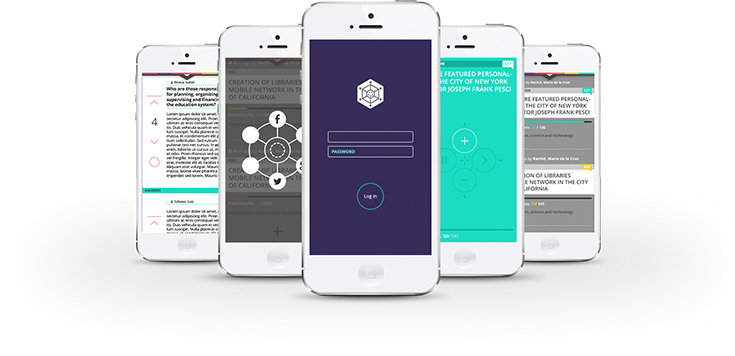

About Us
Occupy Wall Street. Arab Spring. Greek Riots. We’ve been experiencing a great crisis of representation these past decades, regardless of our geolocation, ethnicity or culture. The political system insists in excluding most of us from the spaces where the decisions that impact the most in our life are taken. The internet has changed -everything-; the way we share and consume culture, the way we do commerce,and communicate with others. But the internet has failed to change in one key space of our lives: politics. Democracy is in great lack of a serious update.
We are working on a user-friendly, open-source, vote-and-debate tool, specially crafted for parlia-ments, parties and decision-making institutions that will allow citizens to get informed, join the con-versation and vote on topics, just how they want their representatives to vote. A tool that will trans-form the noise we create during protests into a signal that has a clear, direct and strong impact on the political system. Our vision is that DemocracyOS will become the operating system of a more open and participatory government. Live Demo for the City of Buenos Aires.
We're about to start a Kickstarter to seek funding for our mission. Want to Join us?
*We will not spam. We will mail only once notifying once the Kickstarter is launched, then you can opt-out of our mailing list.
Who We Are
Behind the project there's a group of 40+ millennials; young entrepreneurs and active enthusiasts,
from software engineers and artists, to political scientists and educators, led by Santiago Siri, (elect-
ed as Global Shaper by the World Economic Forum, panelist in the World Justice Forum 2013 and
TEDx speaker) Learn more about our story on our blog, or tweet hi below.
FAQ
How does DOS improve previous online voting systems?
DemocracyOS has a much more user friendly interface, specially in terms of data visualization and browsing. It is a two-way platform: bottom-up (citizens can present projects to be debated) and top-down (the representative presents for debate those bills currently in debate in Congress). DemocracyOS has three basic actions: get informed, join the conversation and vote.
What's the status of development?
We’ve built the initial 20% of the software. The basic initial architecture, frontend, we are working on a Law Markup Language for legislative data (a data structure standard to incorporate data scrapped from legislative sources around the word. The goal is to build and LML to be read by DemocracyOS as well as other apps that accept this open standard) Finally, we have a tested first prototype.
For us to build a stable version, in multiple languages, with mobile support and API REST, we project one year minimum of development with an experienced team of full time time of 5 to 7 people.
How difficult will be to implement DOS in my party/institution?
We will provide content (videos, tutorials) so that ideally anyone can setup DemocracyOS. It should be similar to installing wordpress.
Will you provide a support assistance?
As a part of the project’s financial sustainability plan, we provide consulting services, training, support and adaptations. DOS can be used by public or private organisations.
Can I customize DOS?
Of course! Although currently there's no customization module available, since DOS is licensed under MIT, anyone can download/clone it and modify it suiting their needs while respecting the license.
In what languages will it be available?
Firstly in english and spanish, we will be incorporating translations as we progress.
Why are you launching DOS on Kickstarter?
We share the philosophy behind Kickstarter, we want to crowdfund our project. We want to take the software to the next level and we need support to make it happen.
Crowdfunding dOS will help us to hire programmers and hosting to build a stable and scalable product that contemplates a vast number of users. Secondly, we want to carry out actions that allow us to build an enthusiast community of citizens participating regularly.
How does ID Validation works?
Users must provide online identity (twitter, facebook, email) and a legal identiy (drivers license, ID card, passport) and then get validated by at least six other validated users. We are also looking into mechanisms such as, personally knowing at least one validated user or visiting in person with your ID Card to obtain a user name.
How secure is DOS against hackers?
A system's security depends as much on its code as the platform on which that code is executed. DemocracyOS is open source and under MIT licence. Becauseof this, we invites all programmers and hackers to collaborate in the information security building process. Also, it will allow for any implementation to extend its code to the conditions it deems necessary. Every interaction inside DemocracyOS is registered and an alert mechanism will be in place to detect bugs as well as unwanted interventions and correct them.
Technically, DemocracyOS is conceived to be independent from the operating system, hence an implementation’s security will be subject to the security measures its environment provides. DemocracyOS guarantees the transparent and safe functioning of the platform but can also be empowered by the security arrangements each implementation chooses.
How does the delegation feature works?
If someone feels they are not sufficiently informed to cast a vote on certain topic, he/she can choose another citizen as their proxy on a that particular topic (tag). We’ve put in place an alert system that informs those who have proxy voters, how the proxy will vote and thus the user can then confirm or pull back their delegation and cast a vote directly (the default setting for no-action is confirmation). Proxy delegates are allowed to delegate their vote (and therefore those votes delegated to them) on someone else for that same tag.
You can always take back that delegation.
Will it work on mobile devices?
DemocracyOS is built on HTML5 and is responsive-ready, so it works on most mobile browsers out of the box. Please report a bug if you find it not to work on your device!
Will DOS include notifications?
There are going to be settings at the user level and proposal level. Notifications will be sent for every update or a report every certain period of time.
Contact Us
Contact Us
We're currently seeking topical experts, students and enthusiasts to help out and take action with us. If you feel you can help by spreading the word, doing some press or simply by giving feedback or mentoring our current beta, don't hesitate in contacting us. We're all ears!
- +54 11 4125-4410
- speak@democracyos.org
- @DemocracyOS